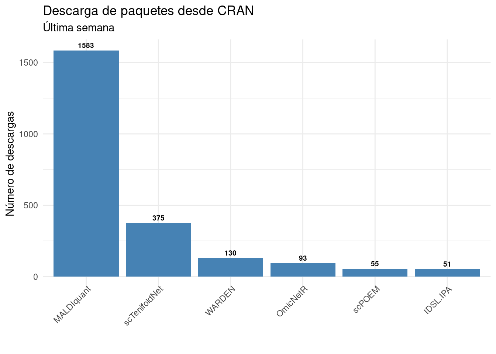
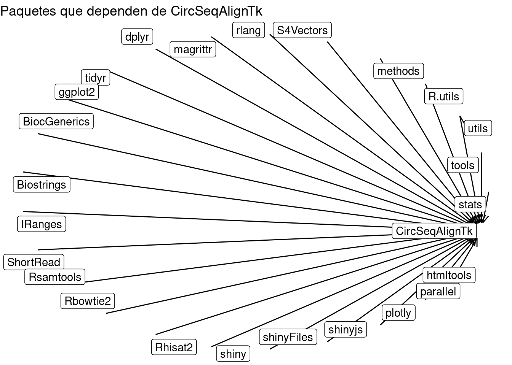
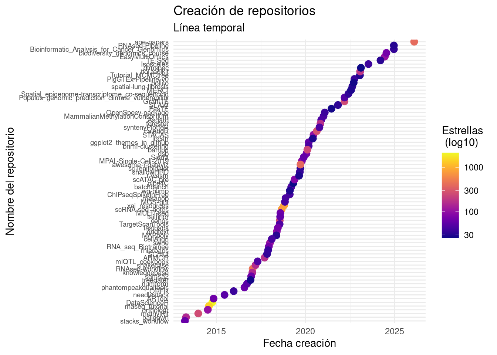

library(tidyverse)
library(BiocPkgTools)
library(igraph)
library(ggraph)
library(tidygraph)Revisión sistemática de repositorios de paquetes para el lenguaje R (CRAN, GitHub, Bioconductor)
- Departamento de Ingeniería Informática, Universidad de Burgos, Burgos, Spain
Autor de correspondencia*: Antonio J. Canepa Oneto [ajcanepa@ubu.es]
Palabras clave
revisión sistemática; repositorios; CRAN; GitHub
Keywords
systematic review; repository; CRAN; GitHub
Introducción
Los lenguajes de programación más comunes en ciencia de datos como R, Julia o Python, poseen una gran diversidad de paquetes que permiten extender sus funcionalidades a demanda (Thieme, 2018). Particularmente, en el lenguaje de programación R estos paquetes se distribuyen principalmente en tres repositorios como son el CRAN, Bioconductor y de una manera mucho menos regulada en GitHub (Plakidas et al., 2017); aunque cabe aclarar que existen algunos más (e.g. GitLab, r-universe.dev, etc.). Algunos de estos repositorios (e.g. CRAN, Bioconductor) disponen de procesos de revisión y control de calidad. CRAN, por su parte, es el repositorio general del entorno de R, con un carácter más amplio; mientras que Bioconductor está centrado en el ámbito de la bioinformática y presenta estándares de revisión más estrictos. Por el contrario, GitHub/GitLab es una plataforma de desarrollo que no cuenta con un procedimiento formal de revisión, siendo utilizada para versiones en desarrollo y distribución de software. No obstante, además de estos tres repositorios principales, existen otras plataformas en este ámbito, entre ellas r-universe, ROpenScience en los que también pueden encontrarse paquetes de R. Debido a la gran cantidad de paquetes en estos repositorios (CRAN posee 22.403 paquetes y Bioconductor posee 3731 paquetes especializados en bioinformática), se han creado aproximaciones de sistematización y categorización de estas herramientas, en las que los paquetes son agrupados por temáticas y/o usos particulares. En el repositorio CRAN existen los CRAN TASK VIEWS (https://cran.r-project.org/web/views/) con 48 disciplinas como agricultura, econometría, meta-análisis, etc. En Bioconductor, existen los BiocViews (https://www.bioconductor.org/packages/release/BiocViews.html) que son un sistema jerárquico de anotación en la que los paquetes se agrupan en catálogos según palabras clave de búsqueda. Sin embargo, una gran cantidad de desarrollo de software está fuera de estos repositorios (principalmente en GitHub) y muchas veces contienen paquetes muy interesantes.
Tanto para quien desea generar un paquete nuevo, como para quienes buscan realizar una investigación sistemática de las herramientas existentes, el poder generar búsquedas estructuradas es de gran ayuda. Así, existen un par de aprocimaciones como el paquete pkgsearch (Csárdi and Salmon, 2025) y la plataforma web libraries.io que permiten realizar búsquedas sencillas de paquetes, sin llegar a utilizar la información sistematizada por los paquetes. En este sentido, se han realizado esfuerzos por consultar y analizar los diferentes repositorios como CRAN y Bioconductor (Plakidas et al., 2017), o bien conectando con la API de GitHub para analizar las tendencias temporales de las funciones disponibles (Staples, 2023). Sin embargo, estos esfuerzos responden preguntas científicas específicas y no aportan una herramienta clara para realizar una revisión sistemática de los paquetes.
Así, tanto como para quien desea explorar los paquetes existentes, como para quien quiera crear un paquete nuevo o incluso analizar sistemáticamente los paquetes disponibles en R, el poder contar con una guía de exploración sistemática de los repositorios de paquetes es de indudable valor. En este trabajo se presentan funciones y ejemplos que permiten hacer una búsqueda sistemática en los tres repositorios más comunes (CRAN, Bioconductor, GitHub) donde encontramos paquetes para el lenguaje de programación R.
Métodos
Para poder realizar consultas en los distintos repositorios y procesar los resultados obtenidos, se han cargado previamente algunos paquetes de R que permiten definir el entorno de trabajo y garantizan la disponibilidad de las funciones empleadas en los ejemplos posteriores. Los paquetes que intervienen en las consultas, manipulación y representación de datos a realizar son los siguientes:
- tidyverse: proporciona herramientas que permiten transformar, manipular y organizar los datos obtenidos en las búsquedas de cada repositorio.
- BiocPkgTools: presenta funciones específicas en el repositorio de Bioconductor que permiten realizar consultas y extraer información.
- igraph, ggraph y tidygraph: permiten la creación, manipulación y visualización de los grafos.
Para realizar la consulta en estos tres repositorios (CRAN, Bioconductor y GitHub) se han creado 3 funciones con filosofías similares que comparten un mismo motor de búsqueda. Aunque cada repositorio presenta sus particularidades en cuanto a su estructura y organización de la información, todas las funciones siguen un esquema general. Cada función recibe una query (consulta) y aplica un proceso sistemático de filtrado. El procedimiento consta de los siguientes pasos:
- Validación de la query
Las funciones comprueban en su inicio si el término de búsqueda, es decir, la query, es válido. Esto implica que el campo no esté vacío y el texto introducido sea de tipo carácter. En caso contrario, se lanza un mensaje de error que alerta al usuario de una llamada incorrecta de la función y se detiene la ejecución.
- Normalización de la query
Las funciones dan soporte a queries en el formato propio de búsqueda de cada repositorio y, además, en formato de búsqueda booleana. Esto permite la creación de consultas con lenguaje natural y operadores lógicos (and y or) que facilitan la generación de la query y permiten que esta sea utilizada indistintamente en los 3 repositorios. Esto evita tener que conocer la semántica de búsqueda de cada uno y tener que ir adaptando la query a estos criterios.
- Agrupación del contenido
La información disponible en cada uno de los repositorios se va a reorganizar formando un texto, o conjunto de términos, que contendrán la información relevante de cada uno de los repositorios. De esta forma, se podrá aplicar el criterio de búsqueda y se realizará un filtrado sin importar el formato original de la información.
- Motor de filtrado
La query normalizada se aplica sobre el contenido anteriormente agrupado, realizando una búsqueda por coincidencia exacta de los términos introducidos. Esta coincidencia es sensible a mayúsculas y minúsculas.
- Generación de una tabla de resultados
Por último, cada una de las funciones devuelve un conjunto estructurado de datos en formato de tabla con aquellos que cumplen la coincidencia con la query introducida.
Mediante estas funciones se permite el empleo de los distintos repositorios de manera transparente a las peculiaridades internas de cada uno.
Consultando CRAN
El repositorio CRAN puede consultarse usando la función CRAN_package_db() del paquete tools (R Core Team, 2026). Así, obtenemos un data.frame con 23.749 filas (los paquetes de R en CRAN al momento de la consulta) y con 69 variables o atributos (columnas) que describen las propiedades de estos paquetes. La query introducida será transformada mediante la función gsub(), que sustituirá el booleano “or” por “|” y el “and” por “&”. Así, la búsqueda sistemática se realizaría, por ejemplo, mediante la función grepl(), que permite crear nuestra consulta o «query». Esta «query» la aplicaremos (a modo de ejemplo) tanto en el nombre del paquete como en el título y en la descripción. Así, nos aseguramos que las palabras claves a buscar sean encontradas en alguna sección importante del paquete.
A continuación se muestra una consulta para encontrar todos los paquetes relacionados con las palabras clave «aligment» and «pipeline» siguiendo el siguiente motor de búsqueda:
(alignment OR sequence alignment OR multiple alignment) AND (pipeline OR workflow OR nextflow OR reproducible workflow OR workflow automation)
Para aplicar esta consulta en nuestro conjunto de datos deberíamos ejecutar:
#Cargamos la función para unificar las búsquedas
source('R/consulta_CRAN.R')
# Filtramos sobre CRAN usando una query con operadores booleanos
Cran_filtrado <- consulta_CRAN(query = "alignment or sequence alignment or multiple alignment and pipeline or workflow or nextflow or reproducible workflow or workflow automation")
Cran_filtradoEn este caso nos encontraríamos con un objeto tibble de 6 filas y las mismas 69 columnas originales de la tabla original de CRAN. Por lo tanto tenemos 6 paquetes que coinciden con nuestra búsqueda. Ahora ya podremos calcular algunas estadísticas como por ejemplo el número de paquetes publicados por año o bien el número de descargas realizadas desde el CRAN, usando el paquete cranlogs (Cs’ardi, 2019) (ver Figura 1).
Consultando Bioconductor
Análogamente, la función biocPkgList() del paquete BiocPkgTools (Su et al., 2026) nos permite descargar un objeto tibble que contiene un listado de los paquetes disponibles en Bioconductor. En este caso, es un tibble con 2.361 filas (paquetes) y con 47 columnas o atributos que describen a los diferentes paquetes, a los cuales podemos acceder.
Si quisiéramos repetir la misma «query», tendríamos que ejecutar:
#Cargamos la función para unificar las búsquedas
source('R/consulta_Bioconductor.R')
# Filtramos sobre Bioconductor usando una query con operadores booleanos
Bioconductor_filtrado <- consulta_Bioconductor(query = "alignment or sequence alignment or multiple alignment and pipeline or workflow or nextflow or reproducible workflow or workflow automation")
#Accedemos a los atributos
names(Bioconductor_filtrado)
Bioconductor_filtradoObtendríamos en este caso, un conjunto de datos tabulado multiclase (S3: biocPkgList/tbl_df/tbl/data.frame) con 6 filas correspondientes a los 6 paquetes que coinciden con nuestra búsqueda y las 47 columnas o atributos que describen a los paquetes consultados. Un objeto multiclase pertenece a varias clases de manera simultánea, por lo cual, hereda métodos y comportamientos de todas ellas. La importancia de esta estructura se encuentra en que combina la flexibilidad proporcionada por los data.frame pero añade funcionalidades propias de tibble, permitiendo así una sencilla manipulación y la compatibilidad con el ecosistema de datos R, además de la extensión mediante sus métodos específicos. Ahora que ya conocemos los paquetes resultantes de nuestra búsqueda, podríamos indagar más sobre ellos, por ejemplo averiguando qué otros paquetes del ecosistema R importa el paquete CircSeqAlignTk (ver Figura 2).
Consultando GitHub
En cuanto al repositorio GitHub, la búsqueda sistemática se realiza mediante el paquete gh (Bryan and Wickham, 2024). Mediante la función del mismo nombre (gh()) podemos consultar la API de GitHub. Para consultar el API necesitaremos de una llave o token que se puede obtener desde https://github.com/settings/tokens.
En este caso, la query introducida también acepta el formato booleano, pero la transformación que experimenta es distinta a la de los casos anteriores, teniendo que adaptarse a la API de búsqueda de GitHub. En este caso se van a generar todas las posibles combinaciones de términos que componen la query introducida. Para ello, divide esta en bloques unidos por el “and”, y dentro de cada uno de estos bloques, separa los términos relacionados con el “or”. A partir de estos grupos se generan todas las posibles combinaciones, equivalente a expandir la expresión booleana inicial. Cada una de estas combinaciones es empleada en el buscador de GitHub, filtrando por nombre, descripción y README.
En este caso el objeto results es una lista con la información siguiendo un formato .json, al cual tendremos que extraer la información necesaria. Tal como señala Bryan & Wickham (2024), la función gh permite consultar mínimamente la API de GitHub y deberemos tener un conocimiento claro de los atributos que queremos consultar para poder almacenarlos dentro de un objeto fácilmente trabajable desde R. En este caso, usaremos la función map() del paquete purrr (Wickham and Henry, 2026) para crear un objeto tibble que almacene los 18 atributos en los que estamos interesados.
#Cargamos la función para unificar las búsquedas
source('R/consulta_GitHub.R')
# Establecemos el "Personal Access Token" ("Tu clave de acceso personal")
Sys.setenv(GITHUB_TOKEN = "tu_clave_de_acceso")
# Filtramos sobre GitHub usando una query con operadores booleanos
GitHub_filtrado <- consulta_GitHub(query = "alignment or sequence alignment or multiple alignment and pipeline or workflow or nextflow or reproducible workflow or workflow automation")
GitHub_filtradoAsí, obtenemos un tibble de 575 filas (el número puede verse modificado en función de las nuevas incorporaciones) correspondientes a los paquetes encontrados y 18 columnas con los atributos que les caracterizan. Uno de estos atributos es el número de estrellas (stars) que un paquete posee, un indicador que emplean los usuarios de GitHub para marcar aquellos repositorios que consideran útiles o relevantes. Es interesante notar que no es tan clara la relación entre el número de estrellas y la fecha de creación del repositorio (ver Figura 3).
Discusión
Si bien existen herramientas para poder tener una visión general de los paquetes disponibles para el lenguaje de programación R, como pueden ser los CRAN TASK VIEW para el repositorio CRAN o los BiocViews para el repositorio Bioconductor, no existe una herramienta (aún) que permita ordenar y sistematizar los paquetes presentes en GitHub. Algunas herramientas existentes como la plataforma web libraries.io (Libraries.io, n.d.), si bien permite la consulta de paquetes, esta no permite hacer una búsqueda en la información de cada uno de los paquetes, haciendo imposible una búsqueda sistemática. Otros servicios de uso abierto y sin login, tales como rdrr.io, también permiten la búsqueda de paquetes en GitHub. Sin embargo, como su base de datos no está siempre actualizada y tampoco se puede realizar una búsqueda exhaustiva en los metadatos de los paquetes, no resulta adecuado para una búsqueda sistemática. Así, creo que es de importancia contar con una pequeña ayuda para hacer busqueda sistemática dentro de los repositorios más comunes para el lenguaje de programación R como puede ser el CRAN, Bioconductor y/o GitHub.
Conclusiones
Se presenta una descripción y ejemplos de consultas sistemáticas de los paquetes disponibles en los repositorios más comunes para el lenguaje de programación R (CRAN, Bioconductor y GitHub).
Contribución de los autores
Agradecimientos
Esta nota se ha revisado siguiendo un proceso colaborativo y público disponible en (link al issue correspondiente). Para reproducir tanto los códigos de la nota como las figuras aquí presentadas, se puede consultar el repositorio creado para esta nota ecoinformática (https://github.com/ajcanepa/NotaEcoinformatica_Revision_Repositorios).
Referencias
Bryan, J., Wickham, H. 2024. Gh: ’GitHub’ ’API’.
Cs’ardi, G. 2019. Cranlogs: Download logs from the ’RStudio’ ’CRAN’ mirror.
Csárdi, G., Salmon, M. 2025. Pkgsearch: Search and query CRAN r packages.
Libraries.io. n.d. Discover open source packages, modules and frameworks.
Plakidas, K., Schall, D., Zdun, U. 2017. Evolution of the r software ecosystem: Metrics, relationships, and their impact on qualities. Journal of Systems and Software 132: 119–146.
R Core Team. 2026. R: A language and environment for statistical computing. R Foundation for Statistical Computing (ROR: <https://ror.org/05qewa988>), Vienna, Austria.
Staples, T.L. 2023. Expansion and evolution of the r programming language. Royal Society Open Science 10: 221550.
Su, S., Ramos, M., Davis, S. 2026. BiocPkgTools: Collection of simple tools for learning about bioconductor packages.
Thieme, N. 2018. R generation. Significance 15: 14–19.
Wickham, H., Henry, L. 2026. Purrr: Functional programming tools.
PIES DE FIGURA
Figura 1. Estadísticas básicas obtenidas de la búsqueda en el repositorio CRAN (descargas, fecha y actividad).
Figura 2. Relaciones de dependencia del paquete CircSeqAlignTk representadas como grafo.
Figura 3. Relación entre la fecha de creación de los repositorios consultados y su calificación en número de estrellas (log10).
FIGURE LEGENDS
Figure 1. Basic statistics obtained from the CRAN repository search (downloads, date and activity).
Figure 2. Graph representation of the dependency relationships of the CircSeqAlignTk package.
Figure 3. Relationship between the repositories’ creation date and their star rating (log10).
FIGURA 1

FIGURA 2

FIGURA 3
